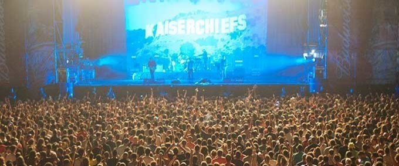

Festivales
Viña Rock
El viña es un clásico entre los festivales de música de España. Es un festival con mucho rock y bastante rap, el de siempre, el que todos disfrutamos saltando y nos hace tirar para atrás el reloj. En esta edición Txarango y Amparanoia correrán a cargo del buen rollito. No te pierdas el desparpajo de Hablando en Plata, Azero, la Mala Rodríguez y los Fitipaldis Band, una banda tributo a Fito. El Viña Rock es una apuesta segura y económica donde las haya.
Primavera Sound
El Primavera Sound está de celebración. Nada más ni nada menos que 15 años dando guerra y encabezando la lista de festivales más consolidados y eclécticos de nuestro país. Este festival de música aglutina el mejor rock, pop y demás música alternativa del panorama nacional e internacional. La melancólica música de Arcade Fire es el reclamo de este año. El mítico Van Morrison y la icónica Grace Jones son los otros platos fuertes de un menú que sabe mucho a inglés y será devorado con gusto por los más festivaleros.
Sónar
Música electrónica y experimental, eso es lo que lleva proponiendo el Sónar desde hace más de dos décadas. Se define a sí mismo como el Festival Internacional de Música Avanzada y New Media Art y, aunque durante su transcurso también tienen lugar otras actividades, es su paleta musical la que atrae a gentes de medio mundo. Paleta a la que este año se incorporan casi cuarenta nombres a los ya conocidos y un escenario más. Destacan la frescura del californiano Anderson Paak y la vuelta de Dj Shadow.
Bilbao BBK Live
El Bilbao BBK es sin duda el festival de música veraniego de referencia en el norte de España. Este año los electro revolucionarios Depeche Mode, los carismáticos The Killers y las contagiosas melodías de Phoenix serán los encargados de poner ritmo a este festival. ¡Una cita ineludible!
El Cruïlla
Si los Pet Shop Boys, The Prodigy, Ryan Adams o Jamiroquai no te convencen para disfrutar de uno de los mejores festivales de música pop rock de España no sabemos que lo hará. ¿Quizá el precio? ¿El sol? ¿La playa? ¿La modernez de Barcelona? ¡No dejes escapar la oportunidad de ver en directo a estos artistazos!
AlRumbo Festival
Este año el AlRumbo Festival cambia de ubicación y se traslada a las fabulosas playas de Chiclana donde las profundas dunas y el verde de la costa dan paso a mucha fiesta, música y desparpajo. No te pierdas el buen rollito del electro flamenco de Chambao, la fuerza de la Mala Rodríguez y la locura de Muchachito en un entorno incomparable ¿Quieres más? Los raperos SFDK y el humor musicado de No me pises que llevo chanclas son dos propuestas muy interesantes.
Festival Internacional de Benicàssim (FIB)
Este festival de música es un clásico entre los clásicos. Los Red Hot Chili Peppers, los Chemical Brothers, Muse, Delorean, Kendrick Lamar, Disclosure, Catfish… He aquí siete poderosas razones para no perderte esta edición del FIB, un festival del que más de uno queda prendado para siempre. Y no solo por la música. El sol, la playa, el calorcito, el buen ambiente y la paella son también firmes competidores.
Low Cost Festival
Fangoria, La Casa Azul, Ojete Calor y Las Chillers son el plato principal de este festival alicantino. Pero que eso no te despiste porque el Low Cost Festival tiene muchos y muy variados entrantes, algunos de ellos tan apetecibles como Franz Ferdinand, Sidonie y Dorian. El Columpio Asesino también tienen mucha guasa. ¡No te pierdas su concierto!
Arenal Sound
Amaral, Lori Meyers, Txarango, Ivan Ferreiro… El Arenal Sound puede ser el festival que estás buscando si quieres picar un poco de todo. Grita al son del pegadizo estribillo I Love it de los Icona Pop o desfásate con las alocadas y deliciosas Nancys Rubias y sus pe, pe, peluquitas. ¡Sé un buen festivalero y salta de un escenario a otro sin remilgos!
Dreambeach
Si buscas un festival donde se respire buena onda y en el que se pueda bailar sin reparos hasta altas horas de la madrugada al son de buena música electrónica, ¡el Dreambeach es para ti! Vibra al son de los mejores DJ’s del panorama internacional como David Guetta, Andy C, Paco Osuna o Carl Cox. ¡Auténticas estrellas del firmamento de la electrónica!